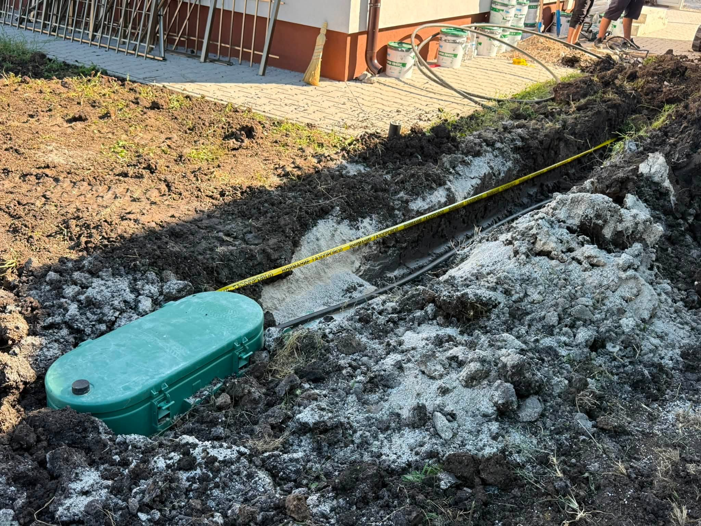
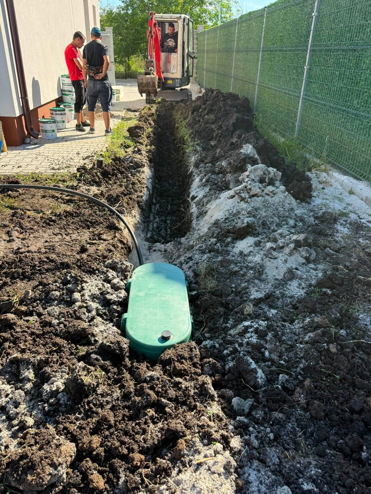

Какво покриват газовите трасета
Базата ни е в Костинброд. Работим в София и София област — от оглед и оферта до монтаж и настройка.
Изграждаме тръбния път самостоятелно или като част от газова инсталация с котел и резервоар. Редът е ясен: трасе, връзки, изпитания, после следващите монтажни стъпки.
Изграждаме тръбния път самостоятелно или заедно с котел и резервоар.
Ползваме качествени материали, правим чист монтаж и изпитания, преди да се премине към следващата стъпка.
- Външни и вътрешни газови трасета
- Качествени материали и чист монтаж
- Изпитания на тръбния път
- Координация с котли и резервоари
Ориентир за трасе — метри и сложност
Цената на газовите трасета зависи от дължината, преминаванията през стени и дали участъкът е външен или вътрешен. Оферта в лв даваме след оглед — без фиксирана „цена на метър“ онлайн.
Какво не е включено / уточняваме честно: Не правим скрито трасе без оглед. Отвори в бетон с диамантено пробиване се оферират отделно.
Трасиране и изпълнение
Оглед
Маршрут на трасето и преминавания през стени/плочи.
Изграждане
Монтаж на тръбния път и връзките.
Изпитания
Проверки преди пускане.
Свързване
Координация с котел или резервоар.
Къде изграждаме газови трасета
Газови трасета изграждаме в София и София област — от Костинброд към близките градове и села.
Подробности по населени места ↓
От трасетата


Въпроси за газови трасета
Какъв е ценовият ориентир за газови трасета?
Цената на газовите трасета зависи от дължината, преминаванията през стени и дали участъкът е външен или вътрешен. Оферта в лв даваме след оглед — без фиксирана „цена на метър“ онлайн.
Правите ли само трасето?
Да — самостоятелно или заедно с котел и резервоар.
Работите ли в София?
Да — София, Костинброд, Сливница, Драгоман, Годеч, Божурище, Своге, Елин Пелин, Банкя, Нови Искър.
Как да заявя оглед?
Обадете се на 0886 391 729.